电路与电子学基础
约 3473 个字 16 张图片 预计阅读时间 12 分钟
概要
- 时间：2025-2026春夏学期
- 学分：2
- 授课老师：魏翼飞
- 教材：简明电路与电子学基础，北京邮电大学出版社
1. 电路基础
1.1 记忆内容（直接背）
集总参数电路：当实际电路的尺寸远小于其最高工作频率对应波长 \(\lambda=c/f\) 时，可以视为集总参数电路．反之则为分布参数电路．
电路的对偶特性：
- 元件对偶：电阻与电导，电感与电容，理想电压源与理想电流源．
- 电路结构对偶：开路与短路，串联与并联，非理想电压源模型与非理想电流源模型．
- 电路定理定律对偶：KCL与KVL，戴维南定理与诺顿定理．
1.2 电路分析中的基本变量
电流：\(i=\dfrac{dq}{dt}\)，需要定义电流参考方向，实际电流方向与参考方向一致为正，反之为负 ．
电压：\(u=\dfrac{dw}{dq}\)，需要定义电压参考方向，高电位写 \(+\)，低电位写 \(-\)，或者写 \(u_ab\) 默认 \(a\) 高 \(b\) 低，实际高低电位与参考方向一致为正，反之为负．
若电流参考方向与电压一致（从 \(+\) 流向 \(-\)），则称关联参考方向，反之非关联参考方向．
功率：\(p=u\cdot i\)，直接把数据带入（正负号也带入），若为非关联参考方向再加个负号．最后计算结果为正代表吸收功率，为负代表供出功率．
电阻：同高中电阻，非关联参考方向 \(u=-R\cdot i\)．
电导：电阻倒数，单位西门子（\(S\)）．
1.3 电路名词
支路：电流大小一样算作同一支路．
节点：支路与支路的连接点．直接找三线交汇的点，将重复的点（电位相等的点）保留一个即可．
回路：闭合路径．
网孔：内部不能再分出回路的回路．
二端网络：与外电路只有两个端钮连接的网络整体．
单口网络：其实就是二端网络．如果端口内只含有电阻、受控源，称为无源单口网络．
1.4 基尔霍夫定律
基尔霍夫电流定律（KCL）：对象为结点，流入结点的电流减去流出的电流等于0．直接按照这么写，方便后续节点电压法的列式．
基尔霍夫电压定律（KVL）：对象为回路，任意找一个电压源，从其负极开始，往其正极方向进行绕圈，电压升高写左边（遇到电压源的负极），电压降低写右边（遇到电压源的正极）．遇到电阻，看经过它的电流参考方向与绕圈方向，一致为降低电压写右边，不一致为升高电压写左边．
2. 电源及其等效
2.1 电源
| 理想电源 | 电压源：两端的电压为定值 | 电流源：穿过其的支路电流为定值 |
|---|---|---|
| 独立电源 | 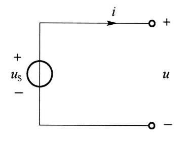 |
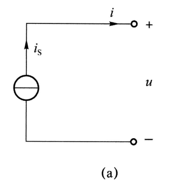 |
| 受控电源 | 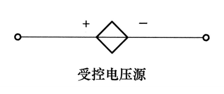 |
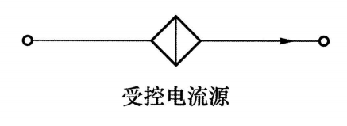 |
受控电源：其电压/电流的值为电路中某一个电压/电流的倍数．注意看其上方的电压/电流编号并在电路图中找出．
注意：是电压源还是电流源只与其图形有关而与控制其的变量无关，他们均可以被电压/电流控制，不用管量纲直接相乘即可．
例
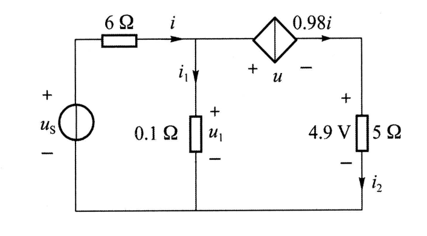
由于经过受控电流源为 \(0.98i\)，而 \(i_{2}\) 也经过它，因此
实际电压源：看作是理想电压源串联电阻 \(R_{s}\)．
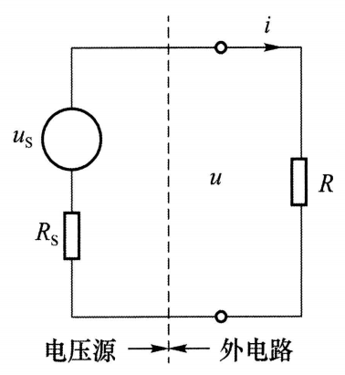
实际电流源：看作是理想电流源并联电阻 \(R_{s}\)．
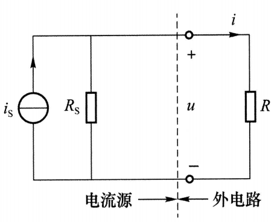
2.2 等效
等效：对外等效，对内不等效，不能用等效后的电路求内部元件的参数．
电阻等效：同高中串并联公式
无源单口网络等效：若无受控源，则同电阻等效；有受控源时，给单口网络外施电压 \(u\)，设法求出端口电流 \(i\)，可等效为 \(R=\dfrac{u}{i}\)．注意，含有受控源的网络求出的等效电阻可能是负数．
电源等效：
- 电压源串联：代数和，可以用KVL中的方法，找一个负极往正极走，遇到负极加上其电压值，遇到正极减去．
- 电压源并联：只有电压一样才能并联，总电压即为那个相同的电压值．
- 电流源串联：只有电流一样才能串联．
- 电流源并联：代数和，注意参考方向．
- 电压源与二端网络并联/电流源与二端网络串联：当作其不存在
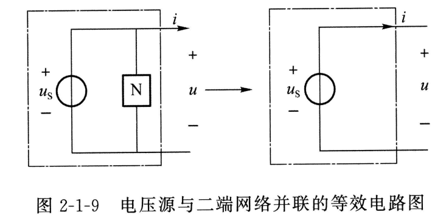
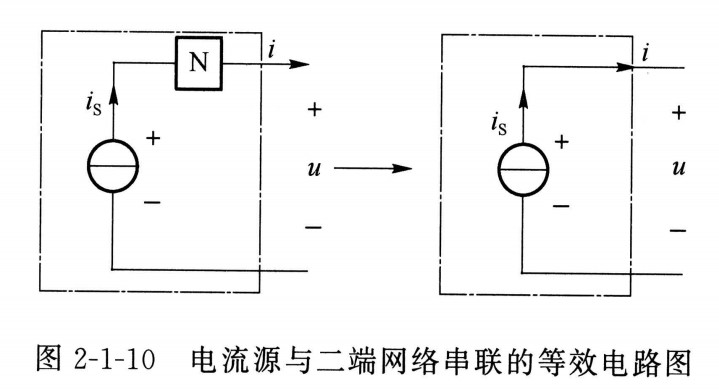
- 实际电压源与实际电流源的等效替换：电阻串改并，并改串；注意方向不要变，此时电流方向为电压的负 \(\to\) 正方向．
- 电压 \(\to\) 电流：电流大小 \(i_{s}=\dfrac{u_{s}}{R_{s}}\)．
- 电流 \(\to\) 电压：电压大小 \(u_{s}=i_{s}R_{s}\)．
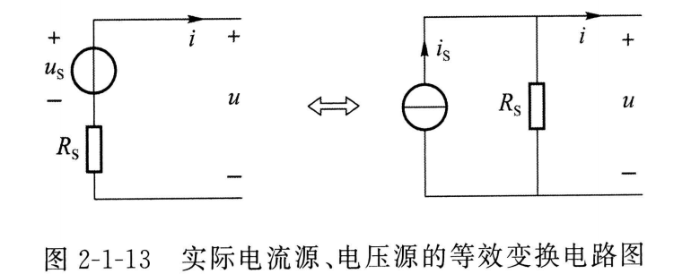
受控电源的等效也要乘以或除以 \(R_{s}\)．
3. 电路分析方法
3.1 网孔电流法
上课没讲，应该不考，略．
3.2 节点电压法
以该题为例：
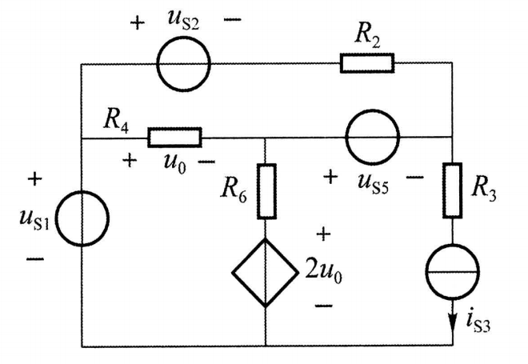
先对电路进行处理：
- 支路为电流源与电阻串联，列方程时忽视该电阻．在上题中，将 \(R_{3}\) 忽视．
- 支路为电压源与电阻串联，将其等效为电流源与电阻并联．在上题中，将 \(u_{s2}\) 与 \(R_{2}\) 视为 \(i_{s2}\) 与 \(R_{2}\) 并联．（此时不用管与电流源并联的电阻的分流作用，直接用电流源连接的节点计算即可，因为那个电阻的分流作用已经在等式左边写出）
-
支路为理想电压源而无电阻，直接设出该支路的电流并当作电流源电流对待，再用该理想电压源两端的电压关系再列一个方程．在上题中，设流经 \(U_{s1}\) 的电流为 \(i_{1}\)，方向向上；流经 \(U_{s5}\) 的电流为 \(i_{2}\)，方向向左；
或者：选择合适的参考节点，使得无阻电压源成为一个已知节点电位． 4. 将受控源当作独立源列方程，同时对控制其的电压/电流参数列个方程．在上题中，需要对 \(u_{0}\) 列一个方程．
自电导：与当前结点直接连接的电导总和．
互电导：与某一个结点之间的电导．
显然，自电导= \(\sum\) 互电导．
选节点：找出电路所有节点，设其中一个节点为参考节点（接地），然后对其他节点列方程（列其他节点的方程时要考虑参考节点，即自电导如果有和参考节点连接要加上，但由于参考节点电压为 \(0\)，因此没有参考节点的互电导项）．
列方程：
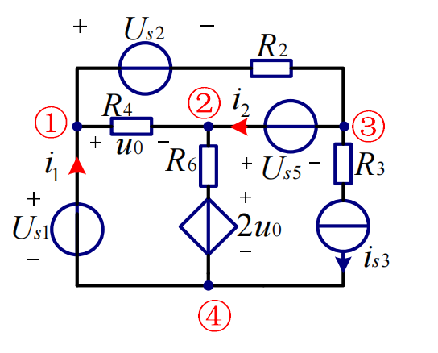
对节点 \(1\)，与其有互电导的为：节点 \(2\)，节点 \(3\)（等效为电流源并联 \(R_{2}\)）．流入的电流源为 \(i_{1}\) 与 \(\dfrac{U_{s2}}{R_{2}}\)，无流出，因此方程为
同理可得节点 \(2,3\) 的方程
接下来我们补齐在步骤 \(3,4\) 额外添加的方程：
- 理想电压源 \(U_{s1}\) 关系：\(u_{1}'=U_{s1}\)
- 理想电压源 \(U_{s5}\) 关系：\(u_2'-u_3'=U_{s5}\)
- 受控源参数 \(u_{0}\) 关系：\(u_{1}'-u_{2}'=u_{0}\)
共有 \(u_{1}',u_{2}',u_{3}',u_{0},i_{1},i_{2}\) 六个未知数，有六个方程，可解．
补充
步骤 \(3\) ：“选择合适的参考节点，使得无阻电压源成为一个已知节点电位”，本题可以选择对 \(U_{s1}\) 的处理用该方法，而对 \(U_{s5}\) 的处理用设电流的方法．
此时就不用列出节点 \(1\) 的方程，我们也就不需要知道节点 \(1\) 的流入电流了．方程减少了两个，但未知数也减少了两个（\(u_{1}',i_{1}\)），仍然是可解的．
4. 电路分析基本定理
4.1 叠加定理
线性电路中任一元件的电压/电流可以看作每一个独立电源单独作用时在该元件产生的电压/电流．
步骤
- 对每一个独立电源，让其单独作用而将其他独立电源置零（电压源短路，电流源断路，可以看作是把他们的圈去掉，这样电压源剩下一根导线，电流源剩下断路）．受控电源不受影响．
- 叠加时，尽量将分量的方向与原来总电压/电流的方向保持一致，这样可以直接相加不用考虑正负号．
- 叠加定理不能计算功率．
4.2 替代定理
上课没讲，略．
4.3 戴维南定理
线性含源单口网络对外可等效为理想电压源 \(u_{oc}\) 与电阻 \(R_{eq}\) 的串联组合．该等效电路称为戴维南等效电路．
电阻 \(R_{eq}\)：除去独立电源（电压源短路，电流源断路）后网络的等效电阻．
电压 \(u_{oc}\)：即为端口的开路电压（注意方向）．
简单的例子：
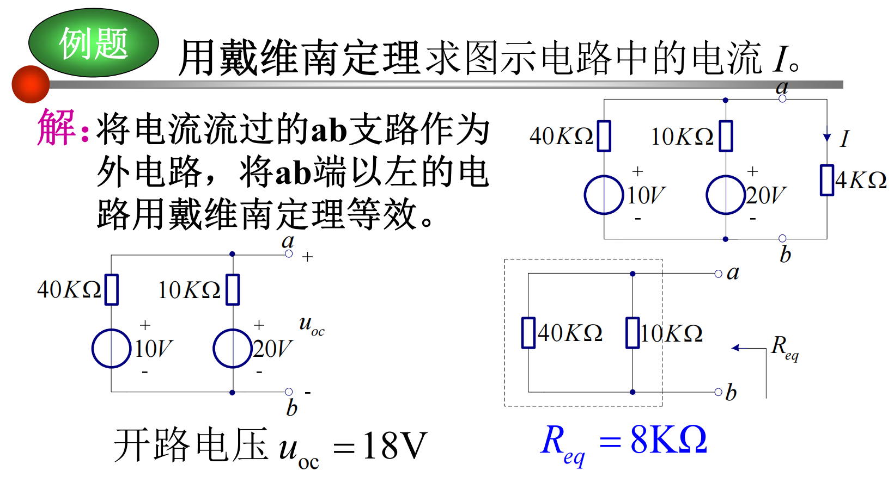
线性含源单口网络的化简：
-
求电压 \(u_{oc}\)：
- 先看是否存在电压源并联二端网络与电流源串联二端网络，如果有直接将其删去．
- 使用实际电压源与实际电流源之间的等效关系化简．
- 根据化简完的电路，使用之前的方法（如KVL、节点电压）计算开路电压．
-
求电阻 \(R_{eq}\)（注意要用原图求，而不是上一步化简完的电路）：
- 法一：除去独立电源，使用无源单口网络等效方法计算．
- 法二：将端口用导线连接，计算出导线上的一个短路电流 \(i_{sc}\)（与计算出的开路电压同向），计算 \(R_{0}=\dfrac{u_{oc}}{i_{sc}}\)．
4.4 诺顿定理
戴维南最后的结果是电压源串联电阻，诺顿最后的结果是电流源并联电阻，而电压源串联电阻与电流源并联电阻本身就可以等效．实际上上述的短路电流法就是诺顿定理的内容．
4.5 最大功率传输定理
高中知识，连接有源单口网络两端的负载电阻在阻值等于 \(R_{eq}\) 时，其获得的功率最大，为 \(P_{max}=\dfrac{u_{oc}^{2}}{4R_{eq}}\)．
5. 动态电路时域分析
此处讨论的均为一阶动态电路，即只有一个动态元件的直流电路．
5.1 动态元件
电容：电流是电压的微分 \(i_{c}(t)=C\dfrac{du_{c}(t)}{dt}\)，电压是电流的积分 \(u_{c}(t)=\displaystyle\dfrac{1}{C}\int_{-\infty}^{t}i_{c}(t)dt\).
-
记忆特性：\(u_{c}(t)=\displaystyle u_{c}(t_{0)}+\dfrac{1}{C}\int_{t_{0}}^{t}i_{c}(t)dt\)
-
储能特性：\(W(t)=\dfrac{1}{2}Cu^{2}_{c}t\)．
-
串并联：与电阻串并联公式相反．
电感：电压是电流的微分 \(u_{L}(t)=C\dfrac{di_{L}(t)}{dt}\)，电流是电压的积分 \(i_{L}(t)=\displaystyle\dfrac{1}{L}\int_{-\infty}^{t}u_{L}(t)dt\).
-
记忆特性：\(i_{L}(t)=\displaystyle i_{L}(t_{0)}+\dfrac{1}{L}\int_{t_{0}}^{t}u_{L}(t)dt\)
-
储能特性：\(W(t)=\dfrac{1}{2}Li^{2}_{L}t\)．
-
串并联：与电阻串并联公式相同．
5.2 换路定则
直流稳态：直流电路中各个元件上的电压和电流都不随着时间变化．
换路：电路由一种工作状态变化到另外一种工作状态．
状态变量：电容电压与电感电流．
进入直流稳态后，分析电路：电容当作断路，电感当作断路．以此计算电容两端电压 \(u_{c}(0^{-})\) 与流经电感电流 \(i_{L}(0^{-})\)．
换路定则：由于状态变量是积分结果，无法突变，因此 \(u_{c}(0^{-})=u_{c}(0^{+})\)，\(i_{L}(0^{-})=i_{L}(0^{+})\)．求 \(t(0^{+})\) 时的电路状态，将电容看作大小为 \(u_{c}(0^{-})\) 的电压源，电感看作大小为 \(i_{L}(0^{-})\) 的电流源．
例题
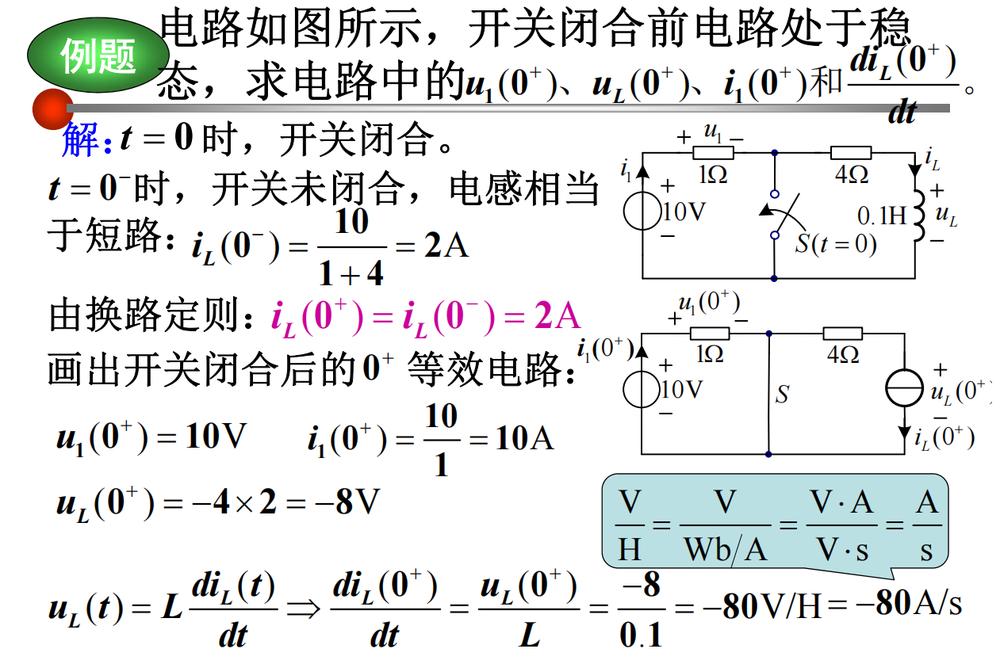
5.3 零输入响应
电路无外加激励（无独立电源），仅由动态元件的非零初始状态引起的响应（只考虑电容电感放电）称为零输入相应（zir）．
将电路等效为电容/电感连接等效电阻 \(R_{eq}\)（就是戴维南的 \(R_{eq}\)），求时间常数 \(\tau =RC\)（电容）或 \(\tau=\dfrac{L}{R}\)（电感），则任意量的零输入响应都可以写成
\(\tau\) 的单位是秒，常取 \(t=(3\sim 5)\tau\) 作为放电完毕所需时间．\(\tau\) 越大放电越慢．
例题
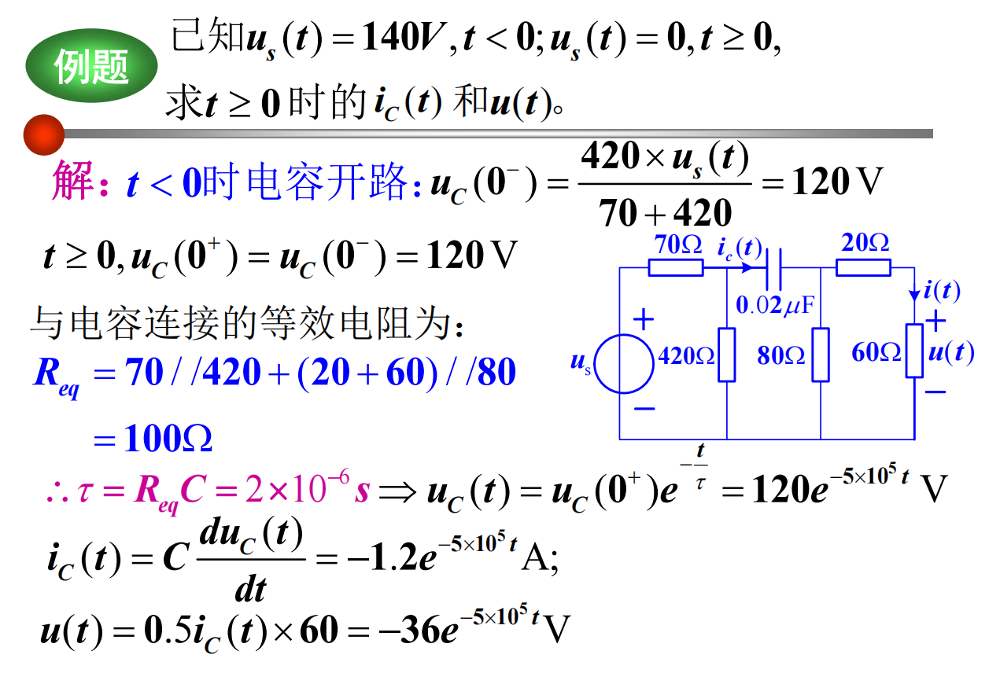
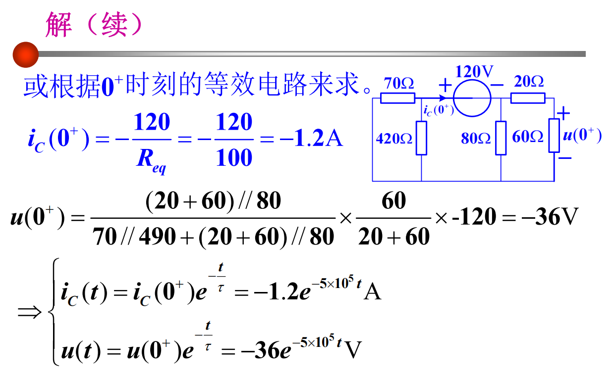
5.4 零状态响应
在零初始状态下，仅由外加激励源产生的响应（电容电感充电过程）称为零状态响应（zsr）．
零状态响应并不是任意量都能写成同一公式，只有状态变量可以写成
的形式，其余变量需要根据电压电流关系推导．其中 \(U_{s}=u_{c}(\infty)\)，\(I_{s}=i_{L}(\infty)\)．
充电过程中，等效电阻损耗的能量与电容/电感的储能一样，充电效率为 \(50\%\)．
与放电一样，\(\tau\) 越大充电越慢．
例题
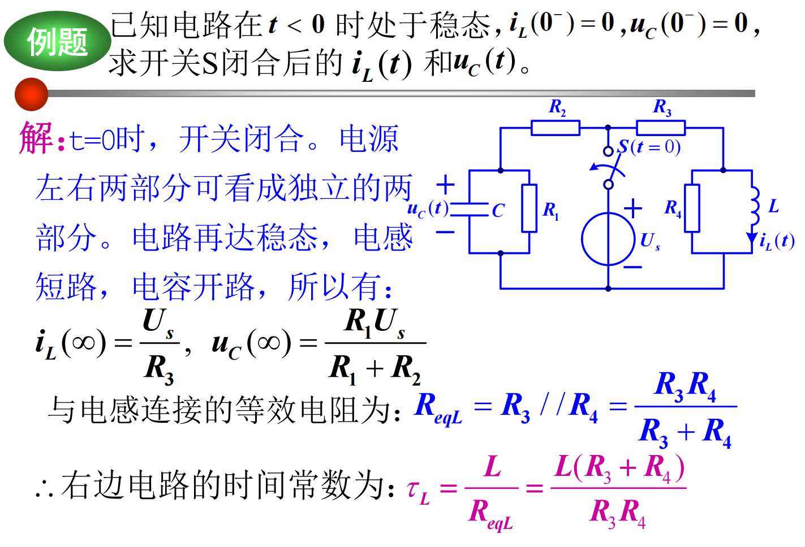
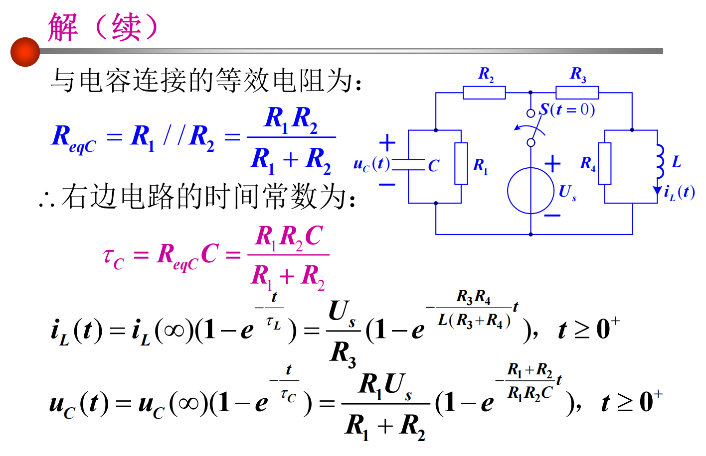
5.5 全响应
全响应=零输入响应（忽略电源）+零状态响应（忽略初始储能）．